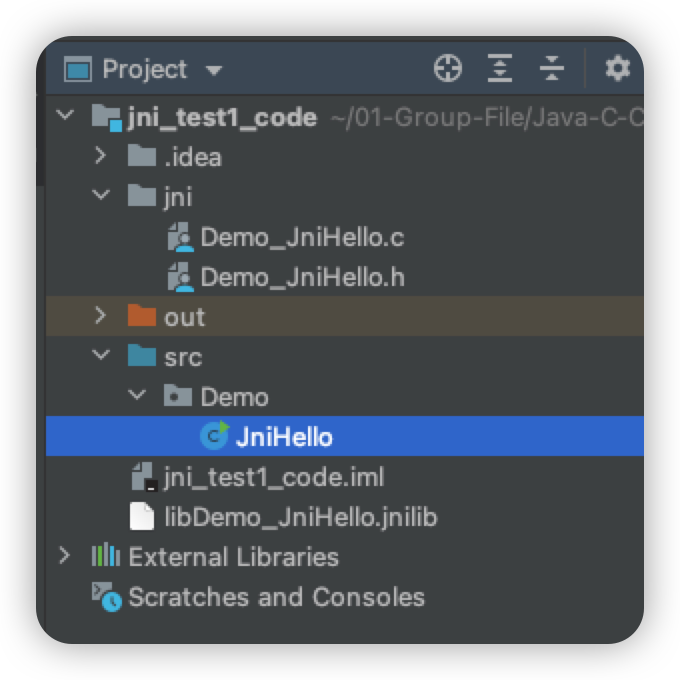
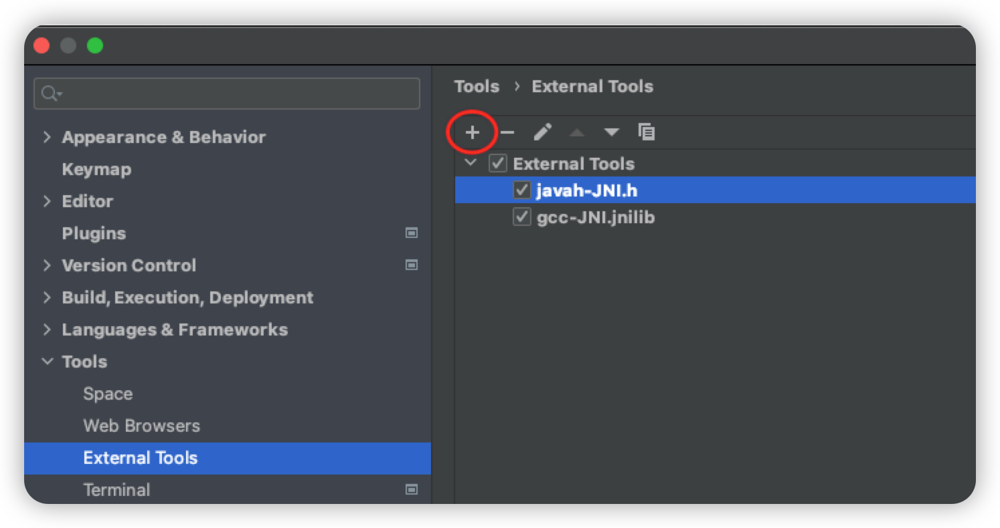
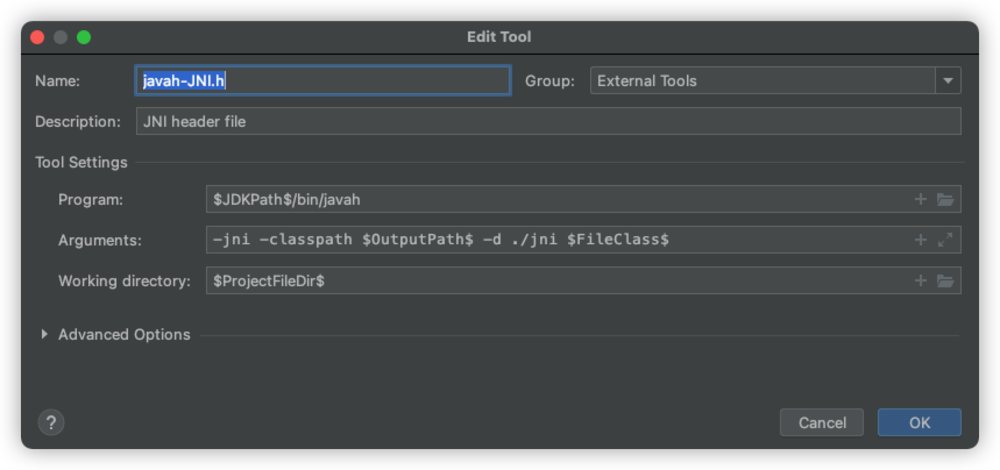
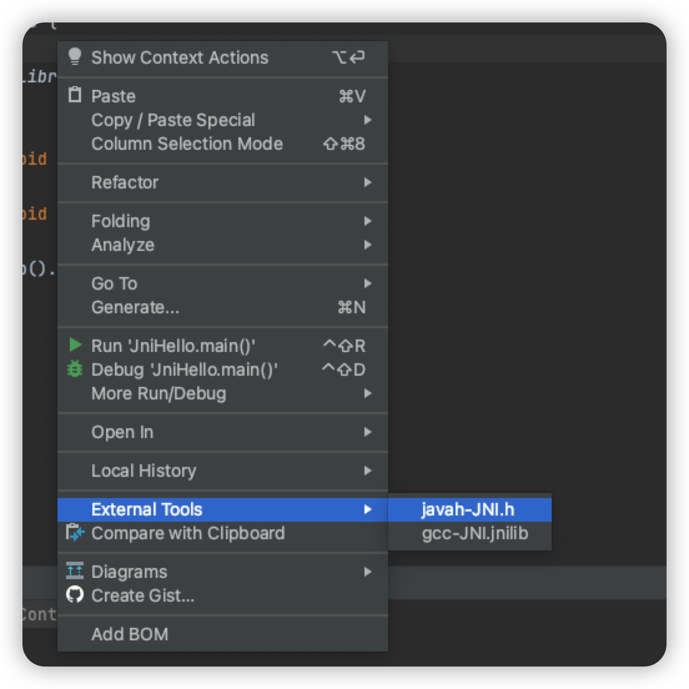
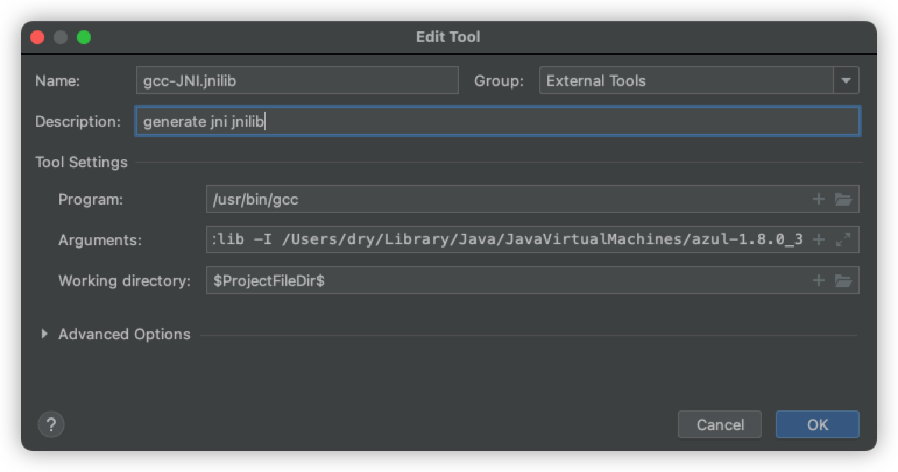
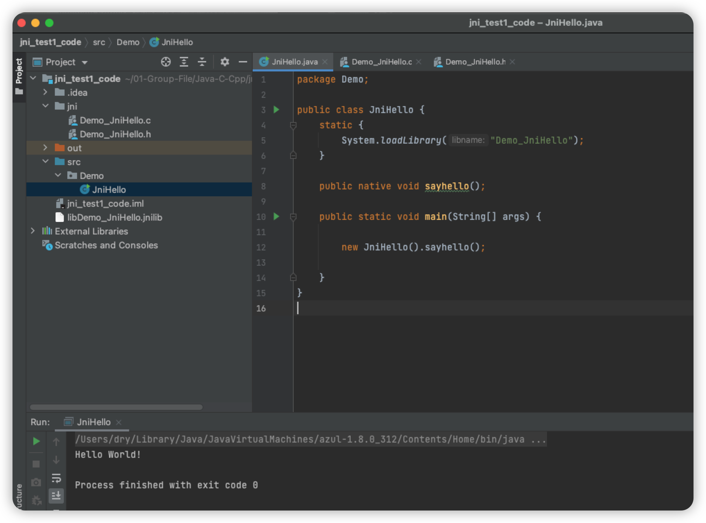
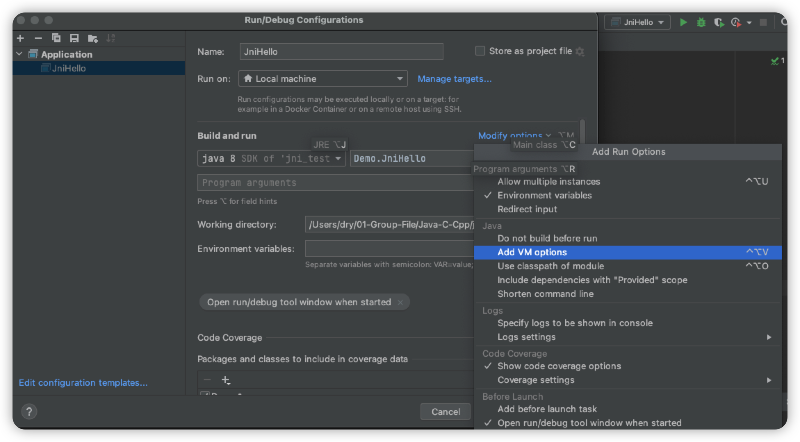

熟悉JNI机制-Idea下JNI编程
熟悉JNI机制-Idea下JNI编程
在IDEA平台下配置JNI编程环境，能省去重复相同的命令行操作，像：javah、gcc命令，节约开发时间。
JNI编程命令行下的操作，可参考：http://t.csdn.cn/EO09I
工程目录如下：

1.写Java调用C代码
1 | |
2.“自动化” javah ：使用Idea External Tools 生成.h文件
External Tools位置：Preference→Tools→External Tools→ +

根据项目的实际目录配置好自动化执行内容：

在当前java文件下右键执行javah，生成相应的头文件Demo_JniHello.h（文件内容自动生成）：

3.写Java调用的C代码
1 | |
4.“自动化”gcc命令：使用Idea External Tools 生成jnilib库
与第2步相同，先新建一个External Tools并配置好执行内容：

Arguments：
1 | |
在.c文件下右键执行gcc命令，生成.jnilib文件：
- Linux:
lib***.so - Win:
***.dll - Mac:
lib***.jnilib
5.运行java

运行时出现的问题：
错误: 找不到 'Demo_JniHello' 的类文件
解决方法：
打开Idea Run/Debug Configuration → Add VM options：

VM options：
1 | |
即让Idea Run加入当前的java library path。
ref：
本博客所有文章除特别声明外，均采用 CC BY-SA 4.0 协议 ，转载请注明出处！